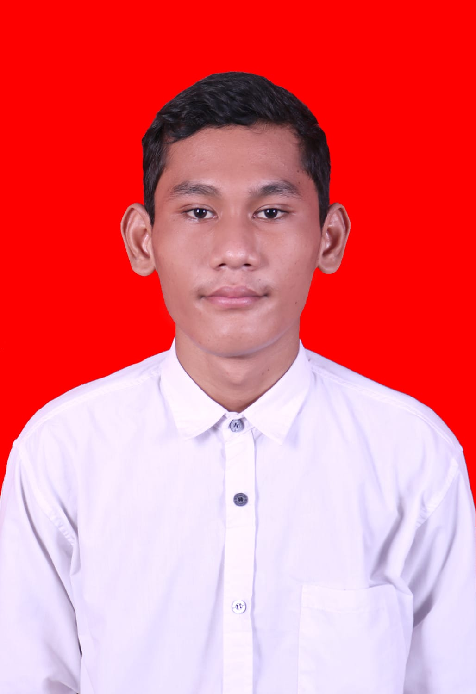

|  | Nama Lengkap: | Mangara Sitinjak |
| Tempat tanggal lahir: | Nabire, 06 Januari 2003 | |
| Alamat: | Jl. Tugu Jepang | |
| Media sosial: | Instagram @mangara_sitinjak17 | |
| Tentang Anda: | Orang yang baik, pendiam dan suka makan dan main game |
visi dapat menjadi lembaga pendidikan teknik yang inovatif berintegritas serta mampu berperan aktif dalam pengembangan dan penerapan pendidikan penelitian dan pengabdian kepada masyarakat